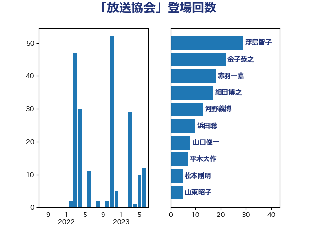

単語「放送協会」

| 浮島智子 | 公明党 | 29 回 |
| 金子恭之 | 自由民主党 | 22 回 |
| 赤羽一嘉 | 公明党 | 18 回 |
| 細田博之 | 自由民主党 | 17 回 |
| 河野義博 | 公明党 | 13 回 |
| 浜田聡 | NHK党 | 10 回 |
| 山口俊一 | 自由民主党 | 8 回 |
| 平木大作 | 公明党 | 7 回 |
| 松本剛明 | 自由民主党 | 5 回 |
| 山東昭子 | 自由民主党 | 5 回 |
| 福岡資麿 | 自由民主党 | 4 回 |
| 石井準一 | 自由民主党 | 4 回 |
| 尾辻秀久 | 無所属 | 4 回 |
| 道下大樹 | 立憲民主党 | 2 回 |
| 末松信介 | 自由民主党 | 2 回 |
| 市村浩一郎 | 日本維新の会 | 2 回 |
| 小沢雅仁 | 立憲民主党 | 2 回 |
| 鈴木庸介 | 立憲民主党 | 1 回 |
| 輿水恵一 | 公明党 | 1 回 |
| 神谷裕 | 立憲民主党 | 1 回 |
| 湯原俊二 | 立憲民主党 | 1 回 |
| 柘植芳文 | 自由民主党 | 1 回 |
| 杉尾秀哉 | 立憲民主党 | 1 回 |
| 平口洋 | 自由民主党 | 1 回 |
| 岡本あき子 | 立憲民主党 | 1 回 |
| 山本順三 | 自由民主党 | 1 回 |
| 寺田稔 | 自由民主党 | 1 回 |
| 宮本岳志 | 日本共産党 | 1 回 |
| 中西祐介 | 自由民主党 | 1 回 |